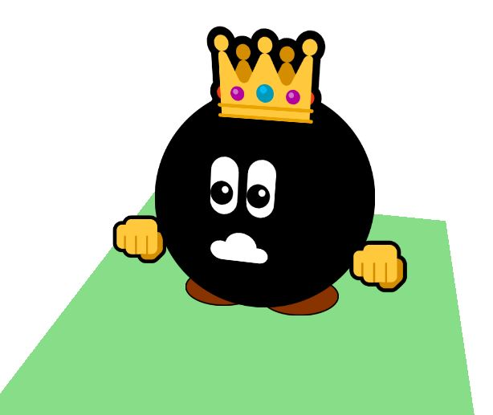

JS13kGames 2021: LOSSST - A Snake in Space
August-September 2021

A special year
Welcome!
2021 is a special year: it's the 10th edition of JS13kGames, and it will be the 10th game that I'll develop in solo!
(I started in 2014, but I made 2 games in 2016 and 3 games in 2018)
This making-of will cover the completion of a simple idea I've had in 2017, implemented in many forms,
and how I plan to make it grow outside of this competition!
You can play the game on js13kGames.com
The source code is on Github
Before the jam

In july, I started preparing this new installment with:
- A list of ideas
- A successful Twitter thread full of JS13k-specific tips and tools
- A SVG creation tool
- A Unicode 13 "recap": all chars / all shapes / all emoji (and an emoji webfont useable in JS13k entries)
- A 3D map editor in CSS3D
- A Mini 2D platformer bootstrap
- A Mini 3D platformer bootstrap
- A tool to convert a list of numbers into an ASCII or Unicode string
- One-div CSS3D cubes (while doing them, I found a super simple way to implement a camera in CSS3D!)
{kind=link}
All these tools plus all the others I made earlier are available in the JS13k resource page
But an impressive game-changing tool also appeared this year, developed by Yurume:
an entry compressor called RoadRoller, allowing to lose an extra 1-2kb in a fully optimized 13kb zip file! 🤯
Day 1: the theme
So the theme is SPACE!
No code today (my love has gone away): day one is dedicated to brainstorming!
I kinda had in mind to do a 3D platformer a la Mario 64, but it wouldn't really fit that theme. So let's find something else!
I scribbled a list of ideas, removed the ones that risked to be over-represented among the other entries, and replayed some of my favourite space-themed mobile games, in particular Escape, Space Frontier and Armory & Machine

The last idea I wrote in my notepad was "a sequel to a puzzle game (...) in space", and that's what I picked:
I'll do a sequel to LOSSST, my #1 entry from 2017!
The history of LOSSST
Summer 2017: idea of the concept, development of the js13k entry LOSSST that arrived #1 on mobile / #2 on desktop that year.
This entry and its making-of were a huge success, though in retrospect, there are many things I would have done differently: the visuals (rooms are too repetitive, snakes made of cubes looked weird, tutorial signposts were not visible enough...), the clumsy CSS3D, the controls (backtracking / moving up and down was difficult), the "exploration / eat apples to grow" thing added a huge unnecessary complexity, and most of all, on a more personal note, I kind of burned out and gained too much weight while developing it, and I regret that.

January 2018: I developed a 1kb demake of LOSSST with the Codegolf Team, containing 55 levels.
Some of them were never seen before. It was a very fun compression challenge, and it can be played HERE.

January-June 2018: I start developing a HD remake of LOSSST with new mechanics, new puzzles, better controls, mp3 musics, photorealistic textures, different environments, better controls, and even a boss fight.
The goal was to eventually publish it on Steam and/or mobile app stores.
Unfortunately, the game was handicaped because of the still clumsy CSS3D engine and the heavy textures, and remained unfinished.
Many lessons were learned though.
And it's still playable HERE!

May 2019: bored with all these cubic snakes, I start to think of a way to represent a volumetric snake out of CSS3D circles and rectangles. You can see a live demo of the result HERE (use mouse to rotate camera vertically).

It's a good start! (Even if the body looks a bit flat, the head really looks like a sphere)...
But this simple demo required a large amount of work to position everything correctly, and it would be a nightmare to animate...
Which gave me the idea to develop...
June-august 2020: a CSS3D framework. With it, setting up the camera, a plane, a cube, a sprite (always facing the camera), or moving an object takes a tiny line of code. The framework itself is 1.4kb zipped, and it would literally have saved me dozens of hours (and probably many kbs) while I was developing the first LOSSST game. And it helped me making my 2020 entry: Track not found?!

Back to august 13, 2021: the idea to redevelop LOSSST (and expand it) as a mobile game (with a succession of puzzles of increasing difficulty and extra challenges for each) has grown in my head, and instead of doing it on my free time, let it be my 2021 js13k entry!
How I will proceed
I will make the game I like: a succession of puzzles, a lot of puzzles, with various mechanics, environments and musics, and at the end, puzzles in space (to fit the theme).
No planning: each day I will work on whatever I feel like working the most.
No burn out: 2-3 hours of work per day, with pauses. Self-care is important.
Stats: every day, I'll record my screen while I code, and share the number of hours spent, the size of my commented code and my progress on Twitter. I'll check out the zipped size once a week.
Last but not least: leave time for beta-testing, debugging and golfing; Don't leave anything for the last minute (like mobile controls), or hope that someone will help me complete my game (especially for the music!)
Day 2! menuing
Brainstorming continues... my idea for now is to build a rocket from different worlds by completing their puzzles.
I scribble ideas in my notepad and start coding a menu...